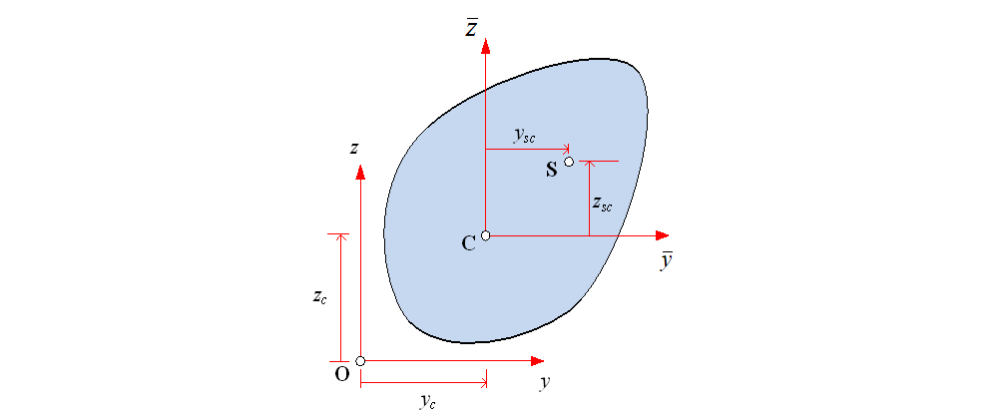
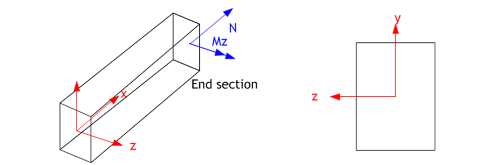
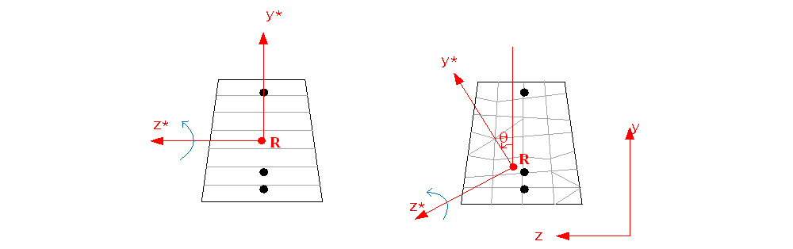
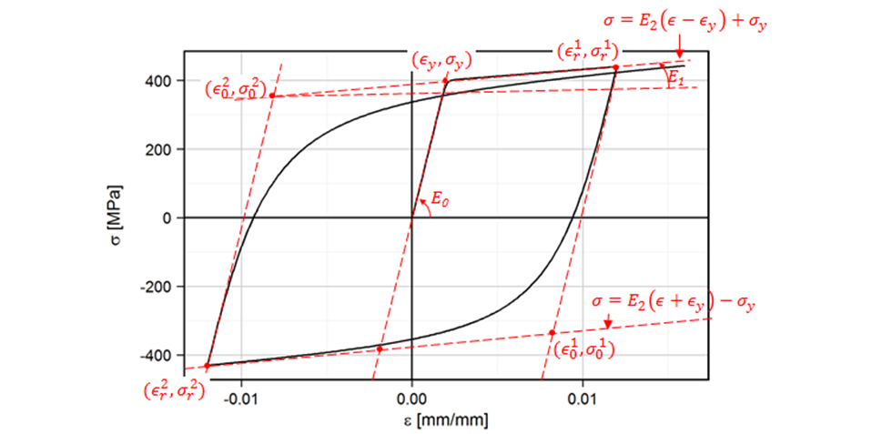

Theory
Theory of Sectional Constant Calculation
The sectional constants calculated for a non-composite section are as follows:
- Sectional area (\(\small A\)): sectional area
- Centroid (\(\small y_c\), \(\small z_c\))
- Second moment of area: \(\small I_{y}\), \(\small I_{z}\), \(\small I_{yz}\) [with respect to the centroid]
- Shear center: \(\small y_{sc}\), \(\small z_{sc}\) [with respect to the centroid]
- Shear area: \(\small A_{sy}\), \(\small A_{sz}\)
- Torsional constant (\(\small J\))
As shown in Fig. 4, the centroid is based on a given origin, but other properties that require a reference point are calculated based on the centroid.

Fig. 4. Coordinate System for Sectional Constant Calculation
Sectional area, first moment of area, and second moment of area can be calculated using the following equations:
The centroid and the second moment of area with respect to the centroid are calculated as follows:
For arbitrary cross-sections where discretization is provided, such as a layered model or finite element mesh, the above equations can be calculated through simple integration. Shear center, shear area, and torsional constant can be calculated by solving a 2D potential problem with boundary conditions. For this, finite element analysis is performed on a 2D finite element mesh. This program uses 3-node and 4-node elements.
If it is a composite section, it is calculated in the form of \(\small EA\), \(\small EI_y\), \(\small EI_z\), \(\small EI_{yz}\), \(\small GA_{sy}\), \(\small GA_{sz}\), \(\small GJ\), where the elastic modulus and shear modulus are multiplied.
Theory of Nonlinear Section Analysis
Nonlinear section analysis is based on Bernoulli beam theory, which assumes that planes perpendicular to the neutral axis remain plane and perpendicular after deformation. The coordinate system used is shown in Fig. 5, and it is assumed that axial strain/axial force is applied at the origin, and moment/curvature is applied around the z-axis.

Fig. 5. Coordinate System and Loading
The sectional forces \(\small\mathbf{D}\) and corresponding sectional deformations \(\small\mathbf{d}\) at any section of the beam can be defined as follows:
Here, \(\small N\) and \(\small M_z\) are the axial force and bending moment, and \(\small\epsilon_0\) and \(\small\kappa_z\) are the corresponding axial strain and curvature at the reference axis, respectively. The stress \(\small\sigma(y)\) and strain \(\small\epsilon(y)\) at any location within the section at position y from the reference axis can be defined, and the stress-strain relationship is determined from an appropriate uniaxial material model:
The relationship between strain and sectional deformation (kinematic relation) is given by:
The sectional force is then computed as the integral of stress:
In section analysis, sectional forces are calculated from given sectional deformations using Eq. (6). Additionally, the tangent stiffness matrix from the linearized section force-sectional deformation relationship is required:
The calculation of Eq. (6) and Eq. (7) requires appropriate discretization and integration of the section. In this case, a discrete point model is applied where the area is concentrated at arbitrary points, or a layered section model can be used. The sectional forces and tangent stiffness matrix for the discretized section are as follows:
Where \(\small n\) is the number of layers or points in the discrete model, and \(\small N_i\), etc., are as follows:
Layered Model
Discrete Point Model

Fig. 6. Layered Section
When using the discrete point model, sectional forces and tangent stiffness matrices can be calculated without numerical integration for the given section deformation, but with the layered model, numerical integration is required in each layer. Assuming the stress and width vary linearly within each layer, the coordinates \(\small y\), stress \(\small\sigma\), and width \(\small b\) in each layer can be expressed as functions of \(\small\xi \in [-1, +1]\) as follows:
Where
Thus, applying Gauss-Legendre integration, we have:
Here, \(\small\xi_1 = -\frac{1}{\sqrt{3}}, \quad \xi_2 = \frac{1}{\sqrt{3}}, \quad w_1 = w_2 = 1\), and the integration is accurate for polynomials up to third order. List 1 shows the section state determination algorithm. In the case of the discrete point model, stress and strain are calculated at the discrete points, while in the layered model, stress and strain are calculated at the top and bottom edges of each layer.

List. 1. Section State Determination Algorithm
The theory presented so far applies to layered sections and sections composed of discrete points. Sections with a 2D mesh can also be analyzed in the same way. Strain is calculated at the nodes of the mesh, and stress is calculated at those nodes. Numerical integration is then performed on each element to calculate the sectional forces.

Fig. 7. Meshed Section
Until now, the origin was used as the reference point for axial strain/axial force, and the z-axis was used for moment/curvature. These values can be changed. For layered sections, the reference point for axial strain/axial force can be changed, and for sections with a mesh, the axis of rotation can also be changed.

Fig. 8. Reference Point and Rotation Angle
Nonlinear Section Analysis Algorithm
hfSectionAnalyzer allows analysis by applying axial force or axial strain, moment, or curvature. The sectional forces and deformations given in the analysis are evaluated incrementally, and Newton's method is applied to satisfy equilibrium conditions within each increment if necessary. For pretension, the corresponding prestrain is calculated and set, and the analysis is performed to satisfy equilibrium conditions. For post-tension, the analysis is performed to satisfy the given prestress conditions and equilibrium.

List. 2. Analysis Algorithm
Additionally, the above analyses can be applied consecutively, and pretension and post-tension can be applied as well. The results of section analysis are calculated based on the given coordinates, and the neutral axis is calculated as follows. The position of the neutral axis satisfies the following condition:
This result is not provided by the program, as it becomes meaningless to define the neutral axis using the above equation when only axial force exists or when axial force dominates the moment.
Material Model
The supported uniaxial stress-strain models are IsoElasticity for linear elastic materials, von Mises for plasticity, USteel for uniaxial steel, and UGeneric for uniaxial generic material, which is usally used for concrete. IsoElasticity can be used for modeling linear elastic materials. For steel, both vonMises and USteel can be used: USteel is applied for bilinear stress-strain relationships, and vonMises is applied for more complex relationships like multi-linear.
Modeling Rebars and Tendons with USteel
For rebars and tendons, the Menegotto-Pinto-based model (USteel) is provided.

Fig. 9. USteel Model (Menegotto-Pinto Model)
Modeling Concrete with UGeneric
Concrete is modeled as shown in Fig. 6. The tension and compression envelopes, as well as degradation under stress reversal, can be controlled through input.

Fig. 10. UGeneric Model